with ADK and Memory BankFrom blank-slate chatbots to agents that remember every user
 Memory Bank
Memory Bank ADK
ADK Gemini
Gemini
 Google Developer GroupBangkok · DevFest 2026
Google Developer GroupBangkok · DevFest 2026
Agenda
- 01The Goldfish ProblemAgents, ADK, and why they forget
- 02Understanding Agent MemoryShort-term vs long-term, sessions, state
- 03Memory BankExtract, consolidate, recall by meaning
- 04Hands-on with ADKSetup, profiles, topics and architecture
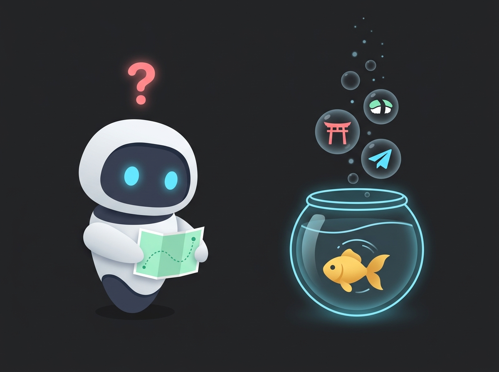
The Goldfish
Problem
Agents, ADK, and why
they forget
Anatomy of a hotel agent
The Brain · Agent
Gemini reasons with a Goal and Instructions.
The Hands · Tools
search_hotels, get_price, book_room & MCP.
Real Systems
Hotel site, Bookings DB and Payment API.
One turn: agent and tools at work
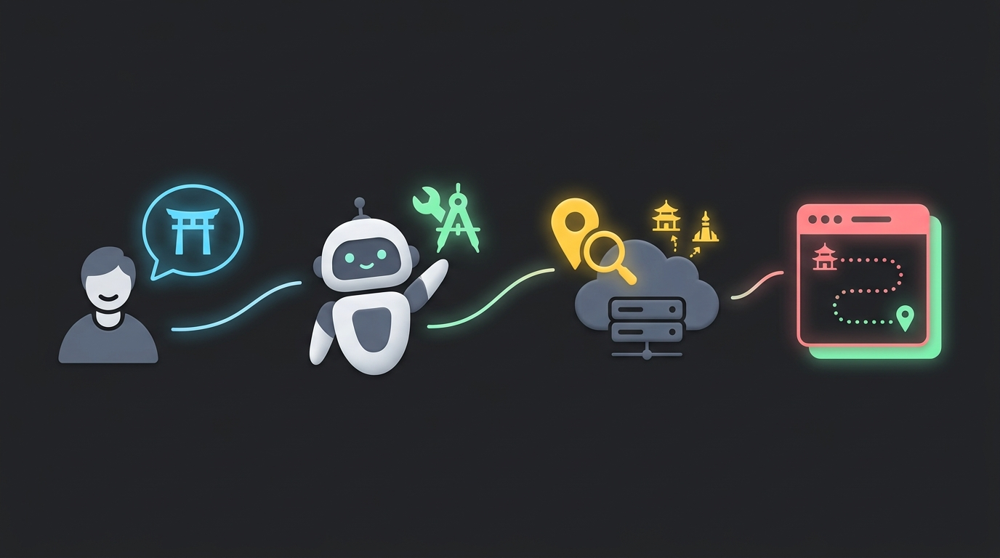
"Find historic sites in Tokyo."
Calls search_places
Queries Places API
"Imperial Palace, Senso-ji…"
Without memory, every chat is a blank slate
Why agents forget
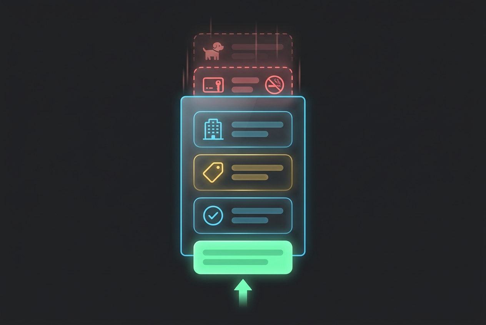
Early preferences (non-smoking, high floor, traveling with a dog) drop off the top of long chats.
The model only sees the recent turns that still fit inside the frame right now.
Brings back only the relevant facts into the prompt when they matter.
Where ADK and Memory Bank fit

Understanding
Agent Memory
Five levels from one chat
to multimodal long-term recall
Five levels of agent memory
What is a Session?
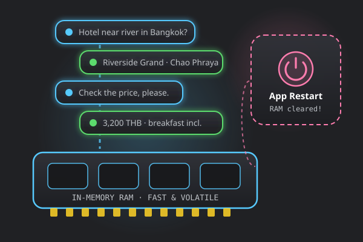
InMemorySessionService (default)
- ✓Reads every earlier message in this thread
- ✓Same session: follow-ups work naturally
- ✓Stored in RAM: fast for local dev
- !New session: forgets everything
- !App restarts: all sessions are wiped
Events record everything; state keeps key facts
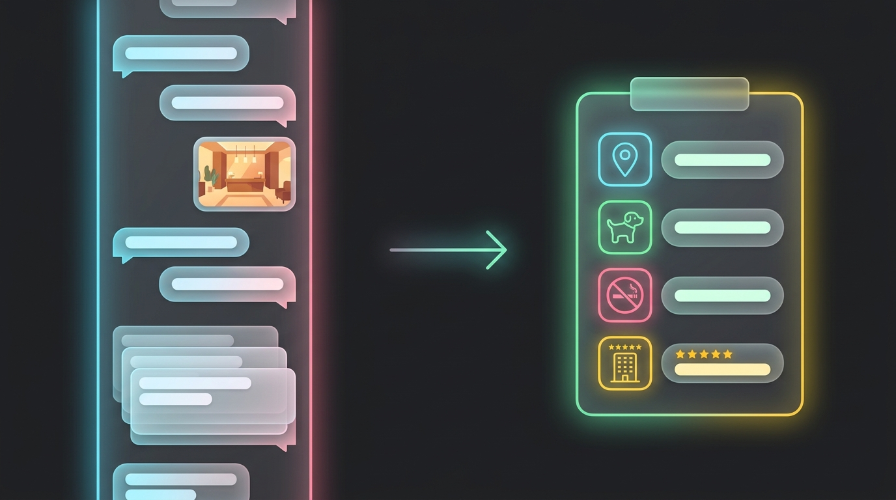
Events · full transcript
Every message, tool call, reply and photo (e.g. [hotel lobby photo]) in order.
State · key-value scratchpad
destination=Bangkok · pet=small dog · smoking=non-smoking · shortlist=Riverside
context.state[...] or output_key so ADK persists the state delta.Agents share notes through state
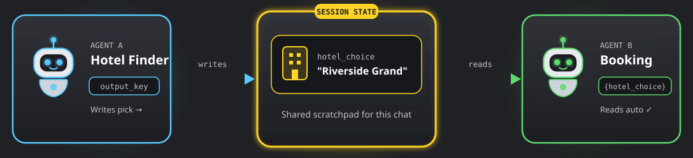
# Agent A saves its answer into session state
hotel_finder = LlmAgent(
name="hotel_finder", instruction="Output only the hotel name.",
output_key="hotel_choice",
)
# Agent B reads it: ADK fills {hotel_choice} from state automatically
booking_agent = LlmAgent(
name="booking_agent", instruction="Book a room at {hotel_choice}.",
)
Session services and state scopes
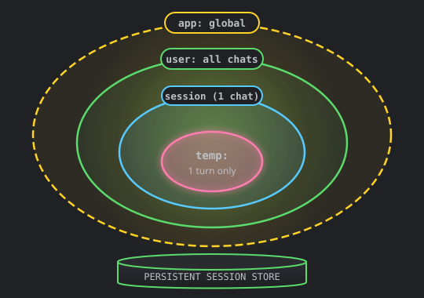
| SessionService | Storage | Restart? |
|---|---|---|
InMemorySessionService | RAM | No |
DatabaseSessionService | SQLite/PG | Yes |
VertexAiSessionService | Agent Engine | Yes |
SessionService in your Runner — keep the agent code untouched. Prefixes (temp:, user:, app:) scope how long keys survive.
Short-term resets. Long-term grows.
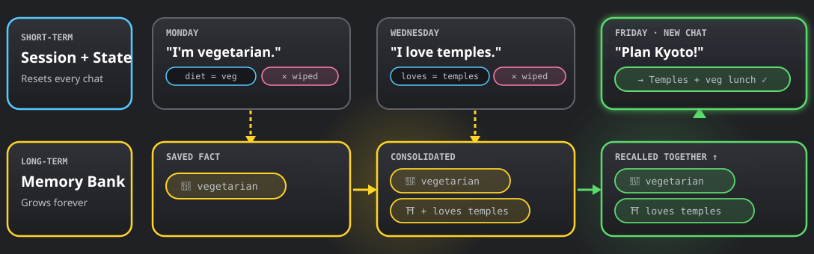
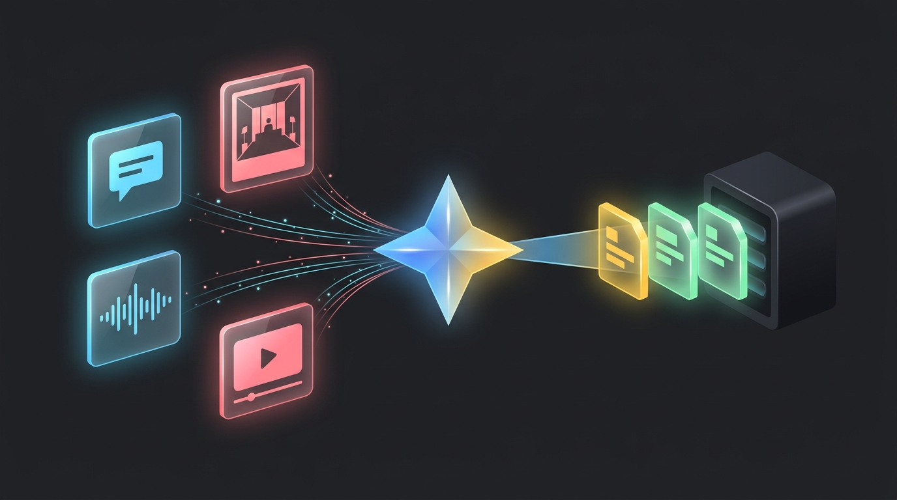
Memory
Bank
Extract, consolidate,
and recall by meaning
SessionService vs MemoryService
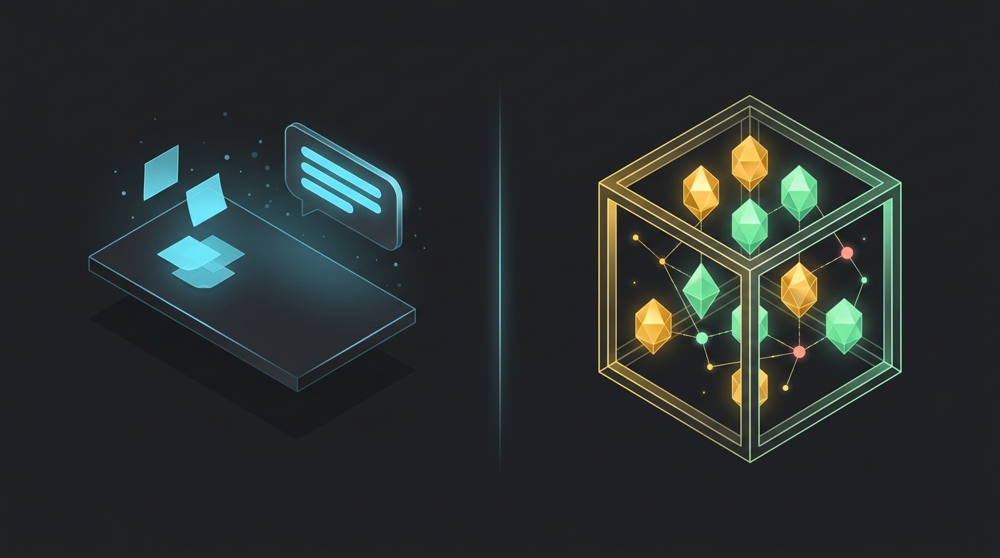
SessionService · Sticky note on your desk
One chat thread · lasts until the chat ends · stores full events & scratchpad state (e.g. destination = "Tokyo").
MemoryService · Organized Memory Bank
Every past chat · lasts until deleted or TTL expires · stores extracted facts (e.g. "User is vegetarian").
MemoryService: keyword vs meaning
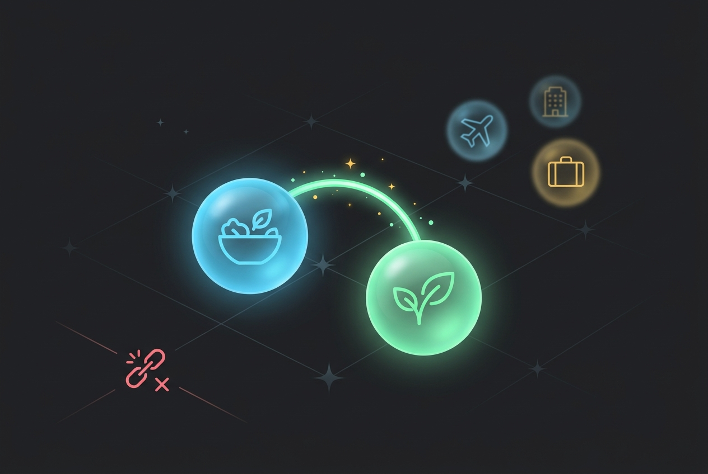
| Service | Store | Search |
|---|---|---|
InMemoryMemoryService | RAM | Keyword |
VertexAiMemoryBankService | Cloud | Semantic |
- ✓Semantic: matches by meaning
- !Keyword: missed — zero shared words
Two ways to ingest memories
1 · Write one fact directly
Call CreateMemory / generate when your app already knows a fact (e.g. a booking form). No transcript needed.
2 · Archive a whole chat
Call add_session_to_memory to extract & consolidate durable facts from messages, photos, audio and video.
Every memory belongs to one user
app_name + user_id: ADK fills scope automatically from the Runner and Session. User A never leaks to User B.
Custom topics: remember what matters
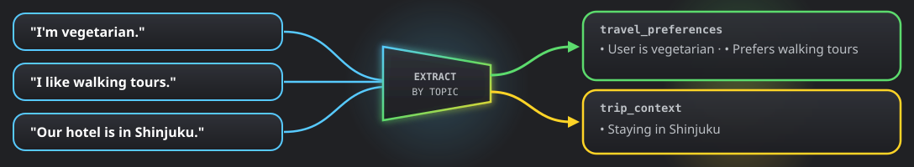
custom_topics = [
MemoryTopic(custom_memory_topic=CustomMemoryTopic(
label="travel_preferences", description="Diet, interests, pace.")),
MemoryTopic(custom_memory_topic=CustomMemoryTopic(
label="trip_context", description="Current trip: city, hotel.")),
]
Define fields in Pydantic, register at creation
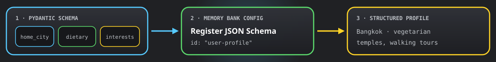
from pydantic import BaseModel, Field
class TravelProfile(BaseModel):
home_city: str = Field(description="Home city.")
dietary: str = Field(description="Diet, e.g. veg.")
interests: str = Field(description="Interests.")
schema_config = {
"id": "user-profile",
"memory_schema": TravelProfile.model_json_schema(),
}
memory_bank = client.memory_banks.create(
managed_semantic_memory_config={
"structured_memory_configs": [
{"schema_configs": [schema_config]}]})
id, or add disable_natural_language_memories for profiles only.Generate from events, read the whole profile
client.memory_banks.memories.generate(
name=memory_bank.name,
scope={"user_id": "123"},
direct_contents_source={"events": [{
"content": {"parts": [{
"text": "I'm vegetarian, based in Bangkok"
}]}
}]},
)
result = client.memory_banks.memories.retrieve_profiles(
name=memory_bank.name,
scope={"user_id": "123"},
)
for profile in result.profiles.values():
print(profile)
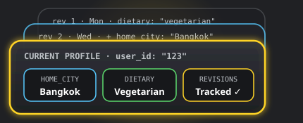
memories.revisions.list.Hands-on
with ADK
Create Memory Bank,
wire the agent and run
Create a Memory Bank in five lines
gcloud auth application-default login
import vertexai
client = vertexai.Client(
project="your-project-id",
location="us-central1",
)
# An empty Agent Engine instance hosts Memory Bank
agent_engine = client.agent_engines.create()
AGENT_ENGINE_ID = agent_engine.api_resource.name.split("/")[-1]
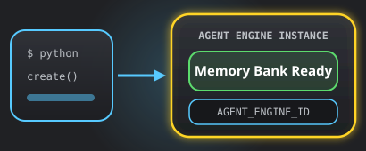
AGENT_ENGINE_ID to VertexAiMemoryBankService.Two hooks in ADK: recall and save
from google.adk.agents import Agent
from google.adk.tools.preload_memory_tool import (
PreloadMemoryTool,
)
root_agent = Agent(
model="gemini-3.8-flash",
name="travel_agent",
instruction=(
"Plan trips. Use what you know "
"about the user."
),
tools=[PreloadMemoryTool()],
)
# When a chat finishes, send it to Memory Bank
await memory_service.add_session_to_memory(session)
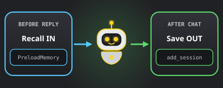
PreloadMemoryTool: auto-injects relevant memories before replying (or use load_memory on demand).add_session_to_memory: archives the finished chat for async extraction.Recall happens automatically
Preload runs before replying — no manual retrieval logic needed.
agent = LlmAgent(
name="travel_agent",
tools=[PreloadMemoryTool(), search_tool],
)
Sessions, Memory Bank and the agent
Runner / ADKAgentGeminiSessions · EngineMemory Bank · EngineConnect, Remember, Personalize

1 · Connect
Standardize tool, API & external system access with MCP.
2 · Orchestrate
Run reasoning loops, sessions & multi-agent state with ADK.
3 · Personalize
Build a persistent semantic memory layer with Memory Bank.
PreloadMemoryTool() and VertexAiMemoryBankService to your ADK agent.Read more and try it
ADK Memory
adk.dev/sessions/memoryADK Sessions & State
adk.dev/sessions/stateMemory Bank Overview
Agent Engine · Memory Bank docs
Memory Profiles
Generate & structure memories
ADK Artifacts
adk.dev/artifacts
ADK Home
adk.devThank you
Q & A
Punsiri Boonyakiat
Google Developer Expert in Cloud AI